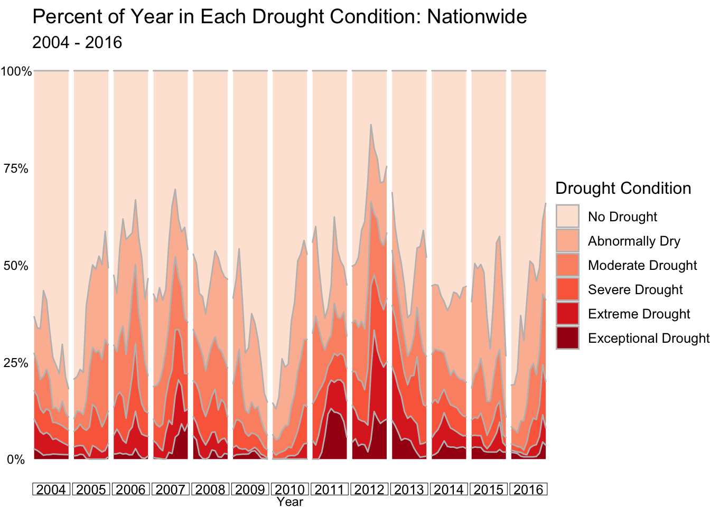
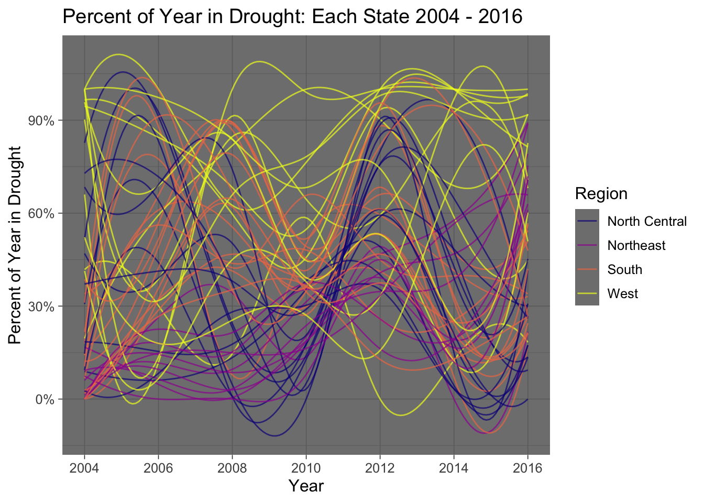

Chapter 4 Results
4.1 Reading the Data Sources
The pre-processed .rds objects were read into R. An additional column was added to the USDM database r drought_condition, which is a factor mapping the drought conditions listed in the metadata to the numerical value.
4.2 USDM Database: Drought Trends
Has drought become more common in the USA over the time period? Has the drought condition of the nation fluctuated over time? What sort of patterns are there? The USDM reports six levels of drought condition ranging from No Drought to Exceptional Drought. To analyze whether drought has become more common in the US from 2004-2016 and view the overall national drought trend, we can view the percent of time spent in the nation as a 100% stacked bar chart over each year, and a stacked area chart over each month.

Creating a more granular stacked area chart to show the data each month reveals additional detail:

There does not appear to be any linear trend for drought in the nation. However, it does appear the country has spent slightly more time in Abnormally Dry - Exceptional Drought periods from 2011-2016 than it has from 2004 - 2010, perhaps indicating drought is becoming slightly more common. There does not appear to be any recurring seasonality over the years. Rather, periods of drought seem to come and go through the years and seasons.
4.3 NFIRS Database: Wildfire Trends
What about the number of wildfires? Has the number of wildfires recorded in NFIRS increased over the years? Is there a seasonality? We can create similar visualizations to the USDM data with the number of fires recorded in NFIRS.
Similarly, we create a more granular bar chart to show the data each month:

The NFIRS wildfires also do not have a clear linear trend from 2004 - 2016 in the number of wildfires. Number of wildfires does have more of a seasonality - more wildfires seem to occur near the middle of each year, which is also the hottest time of year. The number of wildfires by month does not yet seem to have a clear relationship to the drought trends - large nationwide trends in drought prevalence are not clearly mirrored in the number of wildfires, at least at the nationwide level. More analysis will be required to examine the relationship between these two datasets.
4.4 State and County-Wide Results
We can investigate if any states or regions are particularly susceptible or resilient to drought. To do so, we can calculate the time each individual state spends in a drought. We can consider a drought any drought_condition other than Abnormally Dry as a drought state, and derive the time each state spends in a drought, each year. A merge with a dataset of FIPS, which relates a numeric code to a specific state and a specific county, is required for this exercise.
To understand which states and regions are particularly dry, as well as the change in drought over time, we can create a parallel coordinate plot, plotting each state’s proportion in drought over time. We will plot every other year to reduce overplotting and color the points by geographic region.
The North Central and Northeast regions seem to have the most cohesive sets of states - most states in these regions follow the same drought trends, while the states in the West and South have more variation. The nation as a whole follows a similar drought trend during some periods of time ie) 2010 - 2012 as most of the nation enters a drought, while some regions follow different trends during other periods ie) 2006 - 2008 where the South and North Central regions become more dry and less dry, respectively. Overall, the West appears to be the driest or most drought-prone region.
There was a great deal of variation in drought conditions from 2012 - 2016 as pictured above, especially in the North Central region. For a closer look at the transformation, we can plot the percentage in drought for the year, by county nationwide, during each of these years.

We see the same phenomenon occurring on the map - the North Central and South regions become less drought-stricken from 2012 - 2016 while the Northeast becomes more drought-stricken and the West remains very dry.
Did the number of wildfires in these areas follow the same trend? We should investigate the maps from 2012-2016. If drought and wildfires are correlated, Northeastern states should show an above average number of wildfires in 2016 and below average in 2012, while North Central states should have the opposite trend. Creating this map will also require some additional merges - we will perform this exercise at the state level, rather than the county level, as many counties contain limited or no data in NFIRS. To do so we can use Z-score, standardizing the number of fires per year by state, and comparing the Z-score for each state in 2012 and 2016 to the entire timeframe (2004 - 2016). Each year, we can think of a state’s score as its relative number of wildfires, compared to its average year.

There is one outlier from this analysis - the state of Wyoming, which had a z-score outside the range of [-3, 3]. This may be a data collection error or perhaps an extraneous event, but in either case this state was excluded. Overall, the map looks quite similar to the drought map - between 2012 and 2016 wildfires in the North Central and South Central regions move from a higher than average year to a normal to lower than average year of wildfires. Simultaneously, the Northeast transitions from a lower than average number of wildfires to a much higher than average number of wildfires. The similarity of these trends shows there is a correlation between a state’s percent of the year spent in drought, and the comparative rate of wildfires per year between 2012 and 2016. States that became more dry experienced a higher than average number of wildfires, and states that became less dry experienced a lower than average number of wildfires from 2012 - 2016.
We can also summarize this phenomenon in a Cleveland Dot Plot, comparing 2012 and 2016.

It is easier to see the trends with these two figures. Between 2012 and 2016, the North Central region became less dry, and also decreased in relative frequency of wildfires. The Northeast region entered a drought, and increased the relative frequency of wildfires. The South and West had varying results, depending on the state.
4.5 Comparing Drought to Wildfires
Most of this analysis so far has concerned trends among drought and trends among wildfires, identifying similarities between the two. However, exploratory data analysis can be performed working with the two datasets together.
To visualize the correlation between percent of the year spent in drought and the relative number of wildfires (Z-Score), we can create a scatterplot. Each data point will represent one state during one year - its percent in drought during that year and its z-score for the number of wildfires will be calculated and plotted.

Overall there is a positive correlation between the percent of the year spent in drought, and the relative number of wildfires in a particular year. The correlation seems stronger in the Northeast, South and North Central regions than in the West. This is perhaps because the west is more drought-prone in general, meaning a small change in drought status does not make a large difference as the states are in a drought more years than not. The West is clearly the most drought-prone area, but a decrease in percent spent in drought, or a more wet year, does not seem to drastically impact the number of fires in Western states. For other regions, an increase in percent spent in drought is expected to increase the rate of wildfires.
Drought is defined in the USDM database by multiple categories ranging from No Drought to Exceptional Drought. Using a merge between the NFIRS and USDM databases and a zipcode-to-county database, we can determine the county of each wildfire, and then the drought condition at that time using the year, week and county. We can then calculate the average number of wildfires per county, per week, for each drought condition. This will help us ultimately determine the comparative rate of wildfires at different drought conditions.
We can see there is a correlation between the drought condition and the average number of wildfires per county per week. The largest jump occurs from the condition No Drought to Abnormally Dryand then from Abnormally Dry to Moderate Drought. After that, the rate of wildfires for each drought condition is similar. This means counties in a drought clearly have a higher rate of wildfires.
We can view this data grouped as well, comparing the total time the country spent at each drought condition from 2004 - 2016 vs. the distribution of wildfires at the same drought condition.
We can see that the country spent around 55% of the time in “No Drought” condition, but only 45% of wildfires occurred during that time. For all other drought conditions, the inverse relationship is true: a disproportionately high number of wildfires occurred while the country was in a drought.
4.6 Main Takeaways
In the first part of analysis, we found the country seems to travel through periods of drought without any real seasonality or significant long-term development from 2004 - 2016. In addition, there were no obvious similarities in the nationwide number of wildfires each year vs. the national ‘dryness’.
However, making our analysis more granular by region, state and county, we found the regions of the USA followed similar trends over time in drought condition and number of wildfires. Between 2012 and 2016 there were significant changes in many regions of the country. Regions that became drier during that timeframe also had relatively more wildfires. Regions that became less dry, or more wet, had relatively fewer wildfires.
Directly merging the datasets together, we were able to correlate each state’s relative number of wildfires and percent of the year in drought, for each year. We found there was a positive correlation overall between the percent of time a state is in a drought, and the relative number of wildfires. The strength of this correlation varied with the geographic region.
Finally, we found wildfires disproportionately occur when areas are in a drought. Although the nation was not in a drought for the majority of 2004 - 2016, the majority of wildfires occurred while the nation was in a drought.